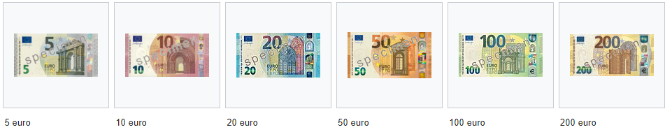
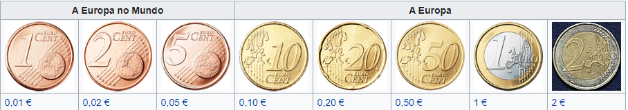

Euro
Euro (símbolo: € código: EUR) é a moeda oficial da zona Euro, a qual é constituída por 19 dos 27 estados-membro da União Europeia: Alemanha, Áustria, Bélgica, Chipre, Eslováquia, Eslovénia, Espanha, Estónia, Finlândia, França, Grécia, Irlanda, Itália, Letónia, Lituânia, Luxemburgo, Malta, Países Baixos e Portugal . A moeda é também usada de forma oficial pelas instituições da União Europeia e por quatro outros países europeus e, de forma unilateral, por outros dois. Em 2018, a moeda era usada diariamente por cerca de 343 milhões de europeus. A moeda é também usada oficialmente em diversos territórios ultramarinos da UE.
A moeda é ainda usada por mais 240 milhões de pessoas em todo o mundo, das quais 190 milhões em África, que usam moedas de câmbio fixo em relação ao euro. O euro é a segunda maior moeda de reserva e a segunda moeda mais transaccionada no mundo a seguir ao dólar dos Estados Unidos. Com mais de 1,2 trilhão de euros em circulação em 2018, o euro tem o maior valor combinado de notas e moedas em circulação no mundo, tendo ultrapassado o dólar norte-americano. Com base em estimativas do Fundo Monetário Internacional do PIB e da paridade do poder de compra, a zona euro é a segunda maior economia do mundo.
O nome "euro" foi oficialmente adotado em 16 de dezembro de 1995. O euro foi introduzido nos mercados financeiros mundiais enquanto unidade de conta a 1 de janeiro de 1999, em substituição da antiga Unidade Monetária Europeia (ECU), a um câmbio de 1:1 (1,1743 USD). As moedas e notas físicas de euro entraram em circulação a 1 de janeiro de 2002, tornando-a a moeda de uso corrente entre os membros originais. Embora nos primeiros dois anos a cotação do euro tenha descido para 0,8252 USD (26 de outubro de 2000), a partir do fim de 2002 começou a ser transacionada a valores superiores ao dólar, atingindo um máximo de 1,6038 USD em 18 de julho de 2008. A partir do fim de 2009, a crise da dívida pública da Zona Euro levou à criação do Fundo Europeu de Estabilização Financeira e à adoção de várias reformas de estabilização monetária.
A história do euro
A ideia do estabelecimento da moeda única na CEE nasceu já na década de 70. Teve como principais defensores os Economistas Fred Arditti, Neil Dowling, Wim Duisenberg, Robert Mundell, Tommaso Padoa-Schioppa e Robert Tollison. No entanto, só pelo Tratado de Maastricht, de 1992 esta ideia passou da teoria para o Direito. Este tratado foi celebrado pelos doze países que à data faziam parte da Comunidade Económica Europeia. O Reino Unido e a Dinamarca optaram neste tratado por ficar de fora da moeda única. Na teoria os países que aderissem posteriormente à União teriam que aderir à moeda única. A Suécia aderiu à União em 1995 mas negociou entrar numa fase posterior. Os critérios para adesão à nova moeda única foram estabelecidos pelo Pacto de Estabilidade e Crescimento de 1997.
O primeiro nome para o sistema de conversão entre as moedas que se uniriam foi o ECU (European Currency Unit em Inglês). O nome de Euro é atribuído ao Belga German Pirloit que assim o sugeriu a Jacques Santer em 1995. O valor da nova moeda foi ancorado ao do ECU por resolução do Conselho da União Europeia de 31 de dezembro de 1998. Esta entrou em vigor a 1 de janeiro de 1999 em forma não material (transferências, cheques, etc.) e a 1 de janeiro de 2002 em notas e moedas.
Notas e moedas
 Zona do euro
A Zona Euro é composta pelos seguintes países da União Europeia, que adotaram a moeda comum: Alemanha, Áustria, Bélgica, Chipre, Eslováquia, Eslovénia, Espanha, Estónia, Finlândia, França, Grécia, Irlanda, Itália, Letónia, Lituânia, Luxemburgo, Malta, Países Baixos e Portugal, prevendo-se que com a expansão da União Europeia alguns dos aderentes mais recentes possam nos próximos anos partilhar também o euro como moeda oficial.
O governo dinamarquês anunciou no seu programa de 22 de novembro de 2007 a sua intenção de organizar um referendo sobre a entrada do país na Zona Euro.
Alguns países pequenos que não praticam políticas de moeda própria usam também o euro: Andorra, Mónaco, São Marino e Vaticano. Montenegro também utiliza o euro como sua moeda oficial. Também no Kosovo, o euro passou a circular mesmo antes da sua declaração de independência.
Outros países tinham a sua moeda fixada a uma antiga moeda europeia. Este era o caso do escudo cabo-verdiano, que estava ligado ao escudo português, e do franco CFA, que era indexado ao franco francês, em circulação em diversos países africanos, e o Franco CFP, dos territórios franceses no Pacífico.
O banco que controla as emissões do euro e executa a política cambial da União Europeia é o Banco Central Europeu, com sede em Frankfurt am Main, na Alemanha.